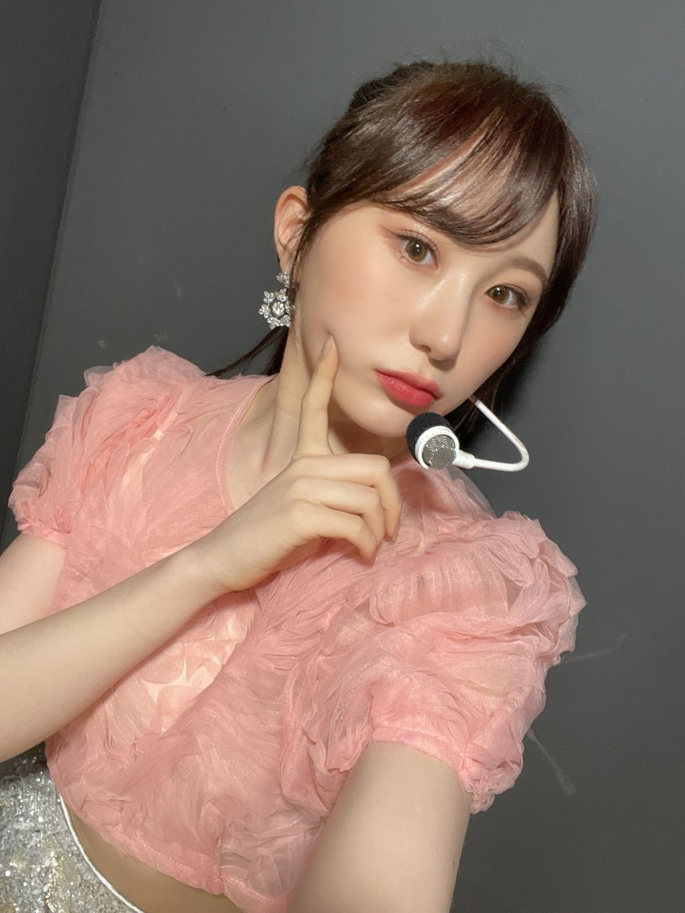

컬러렌즈를 끼기 시작한건..
음 자켓촬영 때 컨셉 때문에 잠깐 낀 것 빼고
한달정도..? 된 것 같아요!
눈치 채고 계셨는지 모르겠어요 ㅎㅎ
어쩌다보니 일상이 컬러렌즈가 되었네요~~~~~
제가 원래 병원에서 맞춘 소프트 렌즈만 끼는데
소프트 렌즈를 다 썼거든요...?
그래서 다시 맞추려고 했는데
일본 렌즈 브랜드에서 제 도수에 맞춰 협찬이 들어와서
알차게 끼고 있답니다🤭
제가 좋아하는 색깔의 렌즈는 거의 다 써서
좀 티나는
연한 브라운 컬러의 렌즈를 사용했어요

사실 컬러렌즈 별로 선호하지 않는데...
이 렌즈는 ((직경))이 작아서 엄청 심각하게 눈동자가
커보이지 않는 점이 좋은 것 같아요🤔
사실.. 가요대제전..?때
M사 시상식 있죠
가면 쓰고.. 저 반묶음..
그 날 렌즈를 깜빡하고 못챙겨가서
다른 걸 꼈는데 직경이 너무 커서
어색하긴 했어요.. 약간 느낌이 멜팅 채연 느낌
이야 무슨 렌즈 하나로 이렇게 길게 얘기하나 싶죠?
그쵸
저도 이럴 때 보면
진짜 말 많다는 걸ㅋㅋㅋㅋ확 느껴요😀
이거는 스포☺️